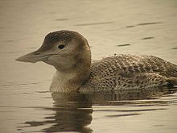
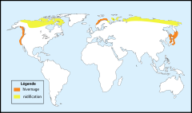
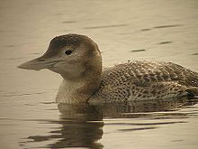
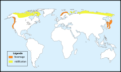

| Yellow-billed Loon | |
|---|---|
|  | |
| Conservation status | |
| Binomial name | |
| Gavia adamsii (Gray, 1859) |
|
|  | |
| Distribution of G. adamsii. Yellow = breeding range Red = winter range |
| Yellow-billed Loon | |
|---|---|
|  | |
| Conservation status | |
| Binomial name | |
| Gavia adamsii (Gray, 1859) |
|
|  | |
| Distribution of G. adamsii. Yellow = breeding range Red = winter range |
The Yellow-billed Loon or Yellow-billed Diver, (Gavia adamsii), is the largest member of the loon or diver family of birds, at 76-97 cm (30-38 in) in length, a weight of 4-6.5 kg (8.8-14.3 lb) and a 135-160 cm (53-63 in) wingspan.[2][3][4][5] It usually appears larger than the similar Great Northern Diver.
It breeds in the Arctic in Russia, Alaska and Canada and winters at sea mainly off the coasts of Norway and western Canada; it may sometimes be found on large inland lakes in winter. This species occasionally wanders south of its normal range into the United States, even as far south as Arizona [1].
Breeding adults have a black head, white underparts and chequered black-and-white mantle. Non-breeding plumage is drabber with the chin and foreneck white. The main distinguishing feature from Great Northern Diver is the longer straw-yellow bill which, because the culmen is straight, appears slightly uptilted.
This species, like all divers, is a specialist fish-eater, catching its prey underwater.
The call is an eerie wailing, lower pitched than Great Northern Diver.
The scientific name of this bird is after the naval surgeon Edward Adams.
The Yellow-billed Diver is one of the species to which the Agreement on the Conservation of African-Eurasian Migratory Waterbirds (AEWA) applies.

{kind=link}
{kind=link}